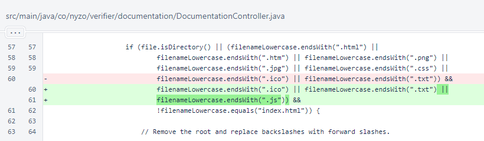
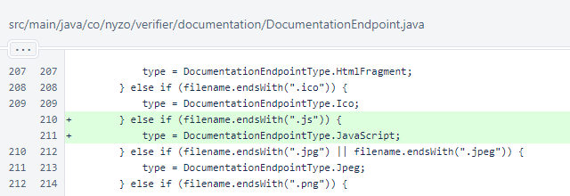
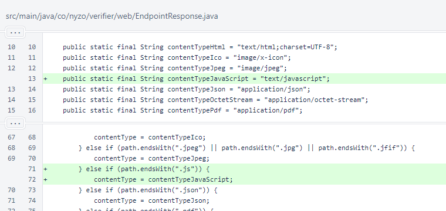

Nyzo version 606 (commit on GitHub) corrects an issue with JavaScript delivery on the documentation server.
This version affects the documentation and relay server.
In DocumentationController.process(), files with the .js extension are now processed when building the endpoint map.
In DocumentationEndpoint.determineType(), files with the .js extension are assigned to DocumentationEndpointType.JavaScript.
The DocumentationEndpointType.JavaScript value was added with a MIME type of EndpointResponse.contentTypeJavaScript, a constant with the value of text/javascript.

The EndpointResponse.contentTypeJavaScript constant was added with a value of text/javascript, and this type is assigned to files with the .js extension in the contentTypeForFile() method, which is used for endpoints for the relay server.
